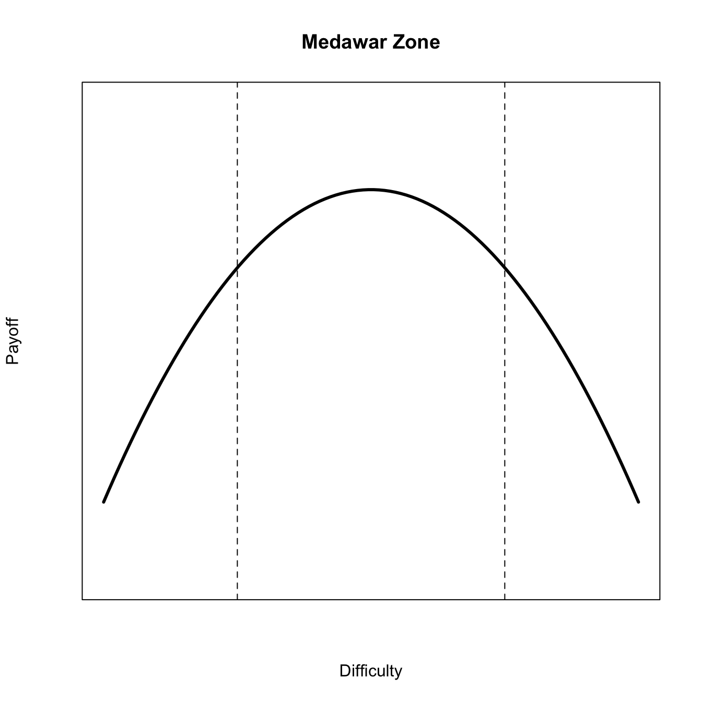
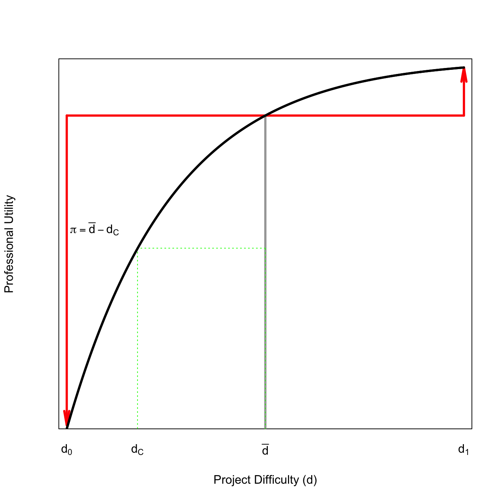

6 Life Advice for Prospective Scientists
Probably the first best piece of advice I can provide is to read Steve Stearns’s Modest Advice for Graduate Students. I actually don’t agree with everything he says, but overall, I think it’s an outstanding essay.
Some of the following notes are imported from various posts over the years to my semi-functional blog.
6.1 A Ph.D. Requires a Vision of the Future
What do you want to do after you graduate? Do you want to be a PI in a R1 university? Do you want to work for a government agency? A teaching-mission college? Industry? Do you want to be an entrepreneur? If you are in an interdisciplinary Ph.D. program, in what disciplinary home do you foresee yourself getting a job? Your ultimate goal helps shape decisions you make in grad school.
6.1.1 Adaptive Management of Your Career
Use the principles of adaptive management, as first articulated by Holling (1978) and Walters (1986), to help shape your career trajectory. Adaptive management proceeds through a series of steps that correspond broadly to planning, doing, monitoring, and adjusting. The specific steps include the following:
- Specify an objective.
- Identify possible management actions.
- Construct alternative models for the different management actions.
- Evaluate the success of the chosen management action for achieving objective.
- Update management decisions.
- Continue measurement, evaluation, modeling alternatives.
From the perspective of managing your graduate career, this means that you first need to determine your professional goal. Suppose your goal is to attain a faculty position at an R1 university. Given the interdisciplinary nature of the HEEH lab and associated departments, you probably need to be a bit more specific than that and consider what your most likely – or most preferred – disciplinary home will be. You might aim for a position in an anthropology or a geography department, for example. Note that even with a disciplinary goal, you will still be eligible for positions in interdisciplinary departments as well. There is an asymmetry there, so it’s always best to have a disciplinary vision.
Second, you specify your possible actions designed to get you to your specified goal. The anthropology/geography choice is instructive here. If your goal is to get a job in an anthropology department, you need to foreground field research, preferably with a strong component of participant-observation. If, instead, your goal is a geography department, it’s critical that you include spatial analysis in your dissertation work. For example, there might be a modeling component to your work. A classic HEEH project might involve a transmission-dynamics model in some sort of structured population. You would probably want to have one of your chapters be a spatially-explicit variant of this model. Note that your alternate possible actions help you decide about what journals you should aim for publication, what conferences you should attend, what funding sources you should seek, etc. If you are aiming for an anthropology department, you apply to the Anthropology programs at NSF (cultural, biological, archaeology, depending on the specifics of your research). If you are aiming for geography, you apply to HEGS. Of course, in reality, you often will try for a co-review, including these programs and possibly others (e.g., DRMS).
You might also need partners for your research. This could be communities where you want to do fieldwork, scientists or government employees in the country of your field research, other scientists who have data or code or other specialized knowledge that you need to complete your project or many other things. Figure out who they are and start arranging.
Third, think through the specifics of the different approaches you formulate. How likely are you to get funding from a particular program? How difficult will the work be, particularly given your background and training, to do the work you need to do for a particular outcome? See Section 6.3.3 for a discussion. For example, maybe adding spatially-explicit variants of your model will be especially hard for you and you’re not really that interested. Forcing yourself to sit down and think about these issues is crucial for formulating an effective plan.
Fourth, regularly evaluate how well you are meeting your goals. Have regular meetings with your advising team and write. You don’t really know how the ideas, methods, hypotheses, models, etc. are working if you don’t actually try to write about it. It’s also a good idea to present your updates. You can – and should – do this at lab meetings. Programs like E-IPER have these milestone meetings built in to the program.
Fifth, update your decisions. Take the feedback you receive gracefully. You’re going to need to get used to it, because your critics only get harsher when you are an independent scholar. Are the elements of your plan actually moving you in the right direction? Do you need to change course because of funding, collaboration, or permission issues? Work with your advising team to update as necessary.
Sixth, keep it up! When you successfully finish your graduate program, think about changes of course. For example, I went from an anthropology department to a multidisciplinary center (actually three: The Center for AIDS and STD, The Center for Statistics in the Social Sciences, and the Center for Studies in Demography and Ecology, all at the University of Washington) because I decided to change the direction of my research from great ape ecology to human population health. It worked out OK for me.
Remember that every decision in life entails trade-offs. There are some particularly important ones to consider as you develop your professional identity. Some important ones include: quality vs. quantity, specialization vs. generalism and, relatedly, robustness vs. (present) optimality.
6.1.2 Plan A’
People talk about the need to have a Plan-B. You need to plan for the contingency where you don’t achieve your originally-articulated objective. I agree. However, I think it’s even better to have a Plan-A and a Plan-A’ (and then a Plan-B). Have two equally-appealing possibilities that you’re working toward. This will provide a natural hedge to your training and hopefully leave you feeling better about taking an alternate path to the one that you had initially imagined.
“But this will detract from students’ specialist training!” I hear you say. Yup. If you’re hitching your wagon to HEEH or to E-IPER or EBS more generally, you’re training to be a generalist in an age of specialists. The thing is, I suspect that this age of specialists may be coming to an end and generalists may have the upper hand in the near future. This is a gamble, no doubt, but it is a gamble that has a very large, possibly convex, upside (unlike the case of choosing a dissertation project as we see below in Section 6.3.3).
We know from the study of adaptation that there is a trade-off between optimality and robustness. Lauring, Frydman, and Andino (2013) coin the phrase survival of the flattest to describe how high mutation rates drive the selection of mutational robustness. This amounts to the difference between a wide, flat fitness surface (where a fairly wide range of genotypes have approximately equal fitness) and a highly peaked fitness surface, where there is a clear optimum.
From life history theory, we know that generalists are favored whenever the consequences of variability have a multiplicative effect within a lifetime (Haaland, Wright, and Ratikainen 2020). This is very likely the case for individual careers. We know that shocks have multiplicative effects on lifetime earning, for example. As we seem to very clearly be in an age of rapid change, with new societal and environmental challenges, and a social and political environment that is often hostile toward universities, I think that the generalist approach to graduate education and training is highly desirable. Foxes beat hedgehogs in times of uncertainty and rapid change.
There are possibly parallels between the benefits of being a generalist – or, at least, working as part of an interdisciplinary team – and the benefits of diversity. In an accesible review, Katherine Phillips summarizes the instrumental benefits of diversity for problem-solving, innovation, and team performance. More diverse teams broadly out-perform more homogeneous teams, even if those homogeneous teams are uniformly excellent. Indeed, as Hong and Page (2004) note, as the pool of problem-solvers gets large, the very best problem-solvers must become similar to each other. The fitness surface is highly peaked. But, as they further note, an individual’s contribution to a problem-solving team is contextual. Different perspectives provide greater breadth of expertise so even if an individual is a less-excellent problem solver, their marginal benefit to the group, and the overall quality of the group’s problem-solving, can be greater.
So too with the individual problem solver. The capacity to draw on a wider range of experiences and perspectives gives you greater space for insight, even if you are not the best in your field at any one thing.
But if you’re going to succeed at becoming a rigorous generalist, you need to become a bit of an autodidact. This is an essential element of the VC-style of generalism I discuss in Section 6.3.1. Part of becoming an autodidact is learning to be okay with failure. Failure may slow us down, but it can ultimately improve long-term learning. You need to learn how to learn and, perhaps paradoxically, too much early success can interfere with this meta-cognition of learning. There is just as much a dilemma here within the academy as there is within business: there are many incentives to succeed early and often, but those can ultimately deflect you from long-term success.
Your capacity to be a rigorous generalist is what will distinguish you in an environment where large language models, and other forms of AI we probably haven’t even conceived of yet, threaten to out-compete people in certain sectors of the knowledge economy. No matter how many millions of parameters specify an LLM, its output (predictions) is still regression to the mean. Now, this mean lies in a pretty extraordinarily large space, but it is a mean to which these models regress nonetheless. If you want to protect yourself from AI, think differently. Synthesize. Make surprising connections and generate unique insights. Be a poet. Be a synesthete. These are hopefully some of the skills you will learn at Stanford and in the HEEH lab.
Fight to hold on to being a generalist as long as possible, give yourself a diversity of experiences from which to draw upon. Think hard about what your objectives actually are, not just what is easily measured, and let your decisions be guided by those. Reevaluate occasionally to ensure that you’re making progress toward those goals. This is simply a re-articulation of the principles of adaptive management.
Save when you can because down-times are certain and it gives you more flexibility to respond adaptively/take advantage of risky opportunities. Don’t put all your eggs in one basket. Remember that we are a social species that can achieve greatness when we solve collective-action problems. A real weakness of the American higher-education system (and Stanford in particular) is that we train (and inculcate) extreme individualists. Communities are not optimized in any way when all of their members are optimizing on some strictly-individual objective function and, perhaps ironically, individuals cannot thus reap the benefits of community. If you want those, you need to prioritize and invest in the community.
Most graduate students go through multiple possible dissertations. I actually lost count of the number I considered and discarded (maybe three?). Sometimes things don’t work out. Field logistics can be complicated and frequently depend on factors completely out of your control. Your plan should be robust enough that you are able to bounce back from the inevitable setbacks and dissertation dead ends. Here again, you will benefit from being a generalist.
6.1.3 Construct a Community that Cares About You
One of the main take-aways from Steve Stearns’s essay is that Nobody Cares About You. His point is actually not as negative as it sounds; it’s really about empowerment and the importance of student initiative: “You had better decide early on that you are in charge of your program. The degree you get is yours to create.” This is true. Your advisor probably does care about you, but they have a ridiculous number of competing concerns.
For many students, graduate school can be an alienating experience. It doesn’t have to be that way. The Grant Study showed that the warmth of social relationships plays a surprisingly dominant role in healthy aging.
Go to lab meetings. Organize activities with the lab. These are people who are most likely to be able to help you intellectually, reading drafts, providing critical feedback on meeting presentations or job talks. It is actually a norm among E-IPER students, and others interested in interdisciplinary research, to attend multiple different lab’s meetings. You benefit by increasing both your bonding and your bridging social capital.
You also need to create a community outside of the department or lab. If you need some structure to creating this community, service organizations can be a rewarding way to find and build community. I have a working hypothesis that there is something particularly rewarding in community gardening, if you can find a way to get involved with that.
6.1.4 Publish Regularly, But Not Too Much
This is straight out of Stearns. It is good – and vitally important – to publish papers. However, publishing papers is not an end to itself and can become a distraction for the other important goals of your Ph.D. like finishing your dissertation (!) and developing skills. Stearns notes that, in classic Pareto-Principle fashion, most research actually goes uncited. Bias your effort toward quality rather than quantity of output. See the related point in Section 1.2.
6.1.5 One-Pager
What you do need is to have a one-pager. Have a one-page summary of your ideas/vision. You should have an accompanying short talk (15-30 minutes). You never know when you might need this and it can be surprising how handy such a statement can be. This is obviously more substantive than the classic elevator pitch, but it retains the spirit. You want something that lays out the vision for what you do (e.g., as articulated in Section 6.1), but does not place too great a burden on your reader.
Keep your CV updated as you do things. It’s amazing how quickly you can forget about important activities.
Have a personal web page and keep it updated! This is how people can learn about you and there are few things more off-putting than a hopelessly-outdated web page
6.2 Should You Even Get a Ph.D.?
Choosing to go to grad school is a decision that is fraught with uncertainty and a degree of risk. There are plenty of nightmare stories to go around about great teachers/scholars who get trapped in an exploitative cycle of perpetual adjuncting. However, a Ph.D. can also be a platform from which to launch a productive and rewarding career both within the academy and outside of it. Here are some of the issues that I think any student approaching a Ph.D., especially in anthropology, should consider:
(1) Are you passionate about research and communication of your research? For better or worse, the rewards within the academy accrue to research and publication. Some professional schools have made substantial progress in developing teaching (and clinical) tracks for faculty that reward teaching and other applied work, but this is typically not the case in disciplines housed in colleges of arts & sciences, as anthropology typically is. You need the passion for your research question to get you through the inherent tedium of research and the many obstacles to successful publication. A commitment to research does not mean giving up on teaching or other activities (such as organizational or other applied work). The NSF career awards, for example, require applicants to coherently weave their research interests with their teaching. However, research requires a commitment and, based on my rather unscientific sample, it seems that the people who are most productive in research are the people who are really driven to answer questions and are committed to publishing not because they want the professional rewards, but because they care about communication of their results. You have to be willing to write at night when you’re exhausted after you’ve put kids to bed and your grading is done. You have to write on weekends, etc. A passion for answering questions goes beyond a fascination with ideas, a love of social theory, or a commitment to education. There is a certain obsessive quality to the top researchers – answering questions and communicating your results becomes almost a compulsion. This is what helps you deal with the inevitable (and frequent) obstacles and allows you to succeed.
(2) Are you enrolling in a program that will pay for your Ph.D.? Given all the vagaries of the faculty job market, you do not want to go into debt doing a Ph.D. The financial details of different Ph.D. programs have become more critical than ever. Make sure you are informed! Ph.D. programs should pay their students’ tuition and a livable wage since Ph.D. students perform vital services for research universities. These services include the obvious things like teaching and doing the grunt work of research assistants but includes some less obvious, but perhaps more important, things like providing prestige to their institutions. The Ph.D. graduates of an institution are the people who go on to get prestigious jobs and write important works and garner fancy awards and societal recognition that reflect positively on their mother institution. It is difficult to over-state the importance of prestige for the functioning of the top research universities and Ph.D. students play a fundamental role in constructing this prestige. Many programs will pay for a Ph.D., but they are very competitive, as you can imagine. Big grad factories that provide little in the way of resources to their students – either financial or human capital investments – do no one any favors.
(3) If you choose to matriculate in a Ph.D. program, take advantage of the opportunity to gain some concrete (and portable!) research skills. Anthropologists have developed some really amazing methodologies that can be applied broadly. I think that anthropologists sometimes have an inferiority complex about our methods. It never ceases to amaze me how often I hear our students say that anthropologists don’t have methods! To get a sense of the potentially far-reaching impact of methodological innovation in anthropology, check out the many students of Kim Romney and Russ Bernard as just two examples. Ethnography is a very trendy idea in industry now. Having a slightly more tangible skill in addition (e.g., survey design, statistics, GIS, the use of qualitative analysis software like Atlas.ti or NVivo, social network analysis) improves not only your academic job prospects but your ability to secure a job in an NGO or industry.
(4) Communicate with people outside of your small disciplinary circle. The ability to communicate across disciplines increases the number of job opportunities both within the academy and without. With an anthropology Ph.D., you may expect a job in an anthropology department. However, if you are able to communicate with a wider audience and, crucially, convince people why your research is important, you might be able to land a job in a department of environmental studies or ethnic studies or women’s studies or urban studies or community health or … you get the idea. The academy of the future is far more interdisciplinary and interdisciplinarity places a premium on the ability to communicate across traditional disciplinary lines. Talk to people outside your department, write journalistic pieces for local media outlets, or even write a blog. I’m continually surprised how many people with whom I make professional connections who know me from the blog I write in about four times a year!
(5) Are you mobile and flexible? Many people who get sucked into the vicious cycle of perpetual adjunct teaching get that way because they are tied to a specific geographic location because of partner, family, or other obligations. There are good graduate programs all over the country and there are actually jobs but many would require you to move to some place you might not have considered. This includes overseas. Sometimes you take a job that may not be your ideal if it provides you an opportunity to get the work done that then allows you to trade up. If you are constrained to remain in a very specific geographic location, I would think twice about matriculating in a Ph.D. program.
I suspect that this is a step in the professional development process where we lose a lot of outstanding potential first-gen faculty. Mobility and flexibility are easier if you are an upper-middle-class grad who has been financially buffered by your parents and, importantly, when your social support derives from a mobile nuclear family. I think there are many ways that modern professionals resemble hunter-gatherers more than their more recent agricultural forebears and the key commonality is mobility and flexibility: emphasis on the nuclear family as the unit of production, bilateral kinship, high logistical and residential mobility, an ethos emphasizing individuality over group identity. Hunter-gatherers follow prey across a landscape while professionals follow job opportunities. People who are tied to a locality, whether for livelihood-based reasons or persistent social ties, will find this type of flexibility more difficult.
Getting a Ph.D. can pay off, both intellectually and professionally but it takes some planning and, frankly, quite a bit of luck if you’re going to make it in the academy. What is less up to luck is the fallback. Have a fallback plan; think strategically. It won’t hurt your chances within the academy and, in fact, will probably help. There are great opportunities for anthropology Ph.D.s with excellent research and communication skills. I have former students who work for major conservation NGOs, public health organizations, and who have even started green businesses. I have friends who have gone into industry and done very well. Sapient and Olson, for example, are two companies I know that get major input from anthropologists and anthropological methodologies. Anthropological insights and, yes, methodologies are in demand if you are willing to look outside of the usual channels for employment for anthropologists.
It’s easy to get depressed by the academic job market (and many other job markets for that matter). However, with a little bit of planning and flexibility, getting a Ph.D. can be an excellent ticket to a rewarding career both within and outside of the academy.
6.2.1 What About a Master’s Degree?
The decision to pursue a master’s degree before matriculating in a Ph.D. program is complicated. In general, I think that if you want to do research (see point 1 above), you should probably just do a Ph.D. program. If you decide it’s not your thing after all, you can always stop early, take the master’s degree that you get along the way to candidacy, and get on with your professional life.
Sometimes it makes sense to get a master’s degree. If you’re planning to do a Ph.D. in the UK, for example, you typically need to have a master’s degree first. The British Ph.D. is generally much faster than the US equivalent and is pure research, no coursework.
The biggest problem with a master’s degree – other than the fact that you don’t really need one and they can slow you down if your goal is actually to get a Ph.D. – is that you usually have to pay for them, while a Ph.D. program will pay you (see point 2 above).
I see very little utility in getting an MPH, particularly if it is your first graduate degree. Sure, it can be an important credential if you are an M.D., but then you should get it as part of your medical fellowship (and get it paid for!). The MPH is a professional degree and it isn’t well-suited for someone interested in a research career.
6.3 On Interdisciplinary Ph.D. Programs
I sometimes get asked to talk to the first-year Ph.D. students in the E-IPER program about my thoughts on interdisciplinarity, a cornerstone of the E-IPER program. For example, I’ve regularly been asked to comment on how to formulate interdisciplinary research questions.
In general, I maintain the slightly heretical opinion that we should not pursue interdisciplinarity for interdisciplinarity’s sake. What matters – both in terms of the science and more instrumental outcomes such as getting published, getting a job, getting tenure – are questions. Yes, questions. One should ask important questions that people care about. Why are there so many species in the tropics? Where do pandemic diseases come from and how can we best control them? Does democracy and the rule of law provide the best approach to governance? How do people adapt to a changing climate?
Where the interdisciplinary Ph.D. program comes in is it provides students the opportunity to pursue whatever tools and approaches are required to answer the question in the best way possible. You don’t need to use a particular approach because that’s what people in your field do. Sometimes the best thing to do will be totally interdisciplinary; sometimes it will look a bit more like what someone in a disciplinary program would do. Interdisciplinarity can be thought of as a random variable: sometimes it’s big, sometimes it’s small. Most of the time, it’s probably intermediate (though this depends on the shape of the distribution). Always lead with the question.
Answering important questions using the best tools available is probably the best route to managing the greatest risk of an interdisciplinary degree. This risk, of course, is the difficulty in getting a job when you don’t look like what any given department had in mind when they wrote a job ad. The best way to manage this risk is simply to be excellent. If your work is strong enough, the specific discipline of your Ph.D. doesn’t really matter. Now, there are certainly some disciplines that are more xenophobic than others (anthropology and economics come immediately to mind), but if your work is really outstanding, the excuse that you don’t have the right degree for a given job gets much more tenuous.
6.3.1 Interdisciplinary Like a Venture Capitalist
As I’ve noted, in E-IPER, everyone spends a great deal of time navel-gazing about the topic of interdisciplinarity. The standard debate is whether it is better to achieve this through training shallow-but-wide generalists or deep specialists who are good at collaboration (or at least experience incentives to collaborate). I think that there is a third path. It’s inspired by getting to know some VCs around Palo Alto. When a VC company provides financial backing to a start-up, the VC becomes either the CEO or CFO until they go public. VCs need to be quick studies and become the world expert on whatever the domain of the company is in a short amount of time. This is a different way to be a generalist. You’re more of a serial specialist who is highly adaptable and can learn fast (and, of course, you retain much of the expertise of your previous gigs). You have to be adaptable and curious and good at learning quickly. It also requires some humility. You need to put your ego aside for a bit while you learn from the people who know more than you (at least for the time-being). I think that this fact explains a lot about the difference between investment bankers (esp the classic East-Coast types), who are not generally known for their humility and VCs, who don’t have small egos, for sure, but who I find much more interesting and cool to hang out with.
6.3.2 On Productive Stupidity
You’re not doing science if you already know all the answers. Honestly, I’m not at all sure what you’re doing if you already know all the answers, but it’s certainly not science. Science is based on answering questions, so you need to have questions that need answering! There is a saying broadly attributed to Einstein, though lacking any specific citation (turns out, there are a lot of these). The saying is good though: If we knew what we were doing, it would not be called research, would it?
If you think you know all the answers in some domain of research, you’re wrong and more than a little arrogant. An all-too-common form of such arrogance is dismissing whole approaches to research and scholarship because you consider them not rigorous or not sufficiently nuanced in their approach. Because of my meandering path through a variety of departments since I arrived at Stanford, I have seen both of these manifestations of academic arrogance from humanistic anthropologists who dismiss scientific approaches to human ecology as “deterministic” and “positivist” to physical scientists who dismiss social science despite fundamentally not even knowing what the social sciences are. We would all do well to follow the admonition of St. Augustine: “Let us, on both sides, lay aside all arrogance. Let us not, on either side, claim that we have already discovered the truth. Let us seek it together as something which is known to neither of us. For then only may we seek it, lovingly and tranquilly, if there be no bold presumption that it is already discovered and possessed.”
I actually try to change the main focus of my research every 5-7 years to keep myself creative and working off the steep part of the productivity curve. It’s good to re-experience the beginner’s mind. This approach, naturally, has its costs and benefits.
6.3.3 Risk-Aversion and Finishing One’s Dissertation
A fundamental trade-off that every graduate student must face is between the ambition of a dissertation project and its feasibility. If you successfully pull off a highly ambitious dissertation, the professional rewards might be great, but there is a much greater chance of you failing spectacularly, especially if your ambition caused you to fail to adequately hedge in your preperation, per Section 6.1.2. A helpful concept for thinking about how to best manage this trade-off was suggested by Craig Loehle in what he dubbed “the Medawar Zone.” This is an nod to the great British scientist, Sir Peter Medawar, whose book, The Art of the Soluble: Creativity and Originality in Science, argued that best kind of scientific problems are those that can be solved. In his classic paper Loehle argues that “there is a general parabolic relationship between the difficulty of a problem and its likely payoff” (Loehle 1990). In Loehle’s figure 1, he defines the Medawar Zone. I have reproduced this figure of the Medawar Zone here.
For a net payoff curve to look like this, the benefits with increased difficulty of the problem are almost certainly concave. That is, they show diminishing marginal returns to increased difficulty. This makes sense. As you move from a trivially-easy problem to a moderately-hard one, the increase in payoff is likely going to be large. However, as you move from a moderately-hard problem to an extremely-hard problem, the increased marginal payoff is likely to be more modest. At some point, projects get so hard that the benefit plateaus or even decreases with increased difficulty. It’s harder to say what the cost curve with difficulty would be. You could make a principled argument for it being either linear or convex (i.e., increasing marginal costs with difficulty by Gadgil and Bossert (1970). Either way, there is an intermediate maximum, akin to the analysis of intermediate reproductive effort) and the best plan is to pick a problem of intermediate difficulty because that is where the scientific benefits, net of the costs, are maximized.
Suppose that a dissertation is a risky endeavor. This is not hard for me to suppose since many people have at least one failed dissertation project. Sometimes this leads to choosing another, typically less ambitious project. Sometimes it leads to an exit from grad school, sans Ph.D. Stanford funds its Ph.D. students for effectively the entirety of their Ph.D. This is a great thing for students because nothing interferes with your ability to think and be intellectually productive than worrying about how you’re going to pay rent. The downside of this generous funding is that students do not have much time to come up with an interesting dissertation project, write grants, go to the field, collect data, and write up before their funding runs out. So, writing a dissertation is risky. There is always a chance that if you pick too hard a problem, you might not finish in time and your funding will run out. Well, it just so happens that the combination of a concave utility function and a risk of failure is pretty much the definition of a risk-averse decision-maker.
Say there is an average degree of difficulty in a field. A student can choose to work on a topic that is more challenging than the average but there is the very real chance that such a project will fail and in order for the student to finish the Ph.D., she will have to quickly complete work on a problem that is easier than the average. Because the payoff curve with difficulty is concave, it means that the amount you lose relative to the mean if you fail is much greater than the amount you gain relative to the mean if you succeed. That is, your downside cost is much greater than your upside benefit.

In the figure, \(d_0\) and \(d_1\) are the high and low difficulty projects respectively. Note that \(d_1 \gg d_0\). The mean difficulty is \(\bar{d}\).
A risk-averse student should be willing to pay a premium for certainty (assuming they are maximizing the expectation of their professional utility). This certainty premium is depicted in the dotted line stretching back horizontally from the vertical dashed line at \(d=\bar{d}\) to the utility curve. The certain payoff the student is willing to accept vs. the uncertain mean is where this dotted line hits the utility curve. Being at this point on the utility curve (where you have paid the certainty premium) probably puts you at the lower end of the Medawar Zone envelope, but hopefully, you’re still in it.
The take-away from this is that you should pick a project you can do and maybe be a bit conservative. The Ph.D. isn’t a career, it’s a launching point for a career. The best dissertation, after all, is a done dissertation. While I think this is sensible advice for just about anyone working on a Ph.D., the thought of science progressing in such a conservative manner frankly gives me chills. Talk about a recipe for normal science! It seems what we need, institutionally, is a period in which conservatism is not the best option. This may just be the post-doc period. For me, my time at the University of Washington (CSSS and CSDE) was a period when I had unmitigated freedom to explore methods relevant to what I was hired to do. I learned more in two years than in – I’d rather not say how many – years of graduate school. The very prestigious post-doctoral programs such as the Miller Fellowships at Berkeley, the Society of Fellows at Harvard or Michigan, or the Science Fellows here at Stanford seem like they are specifically designed to provide the environment where the concavity of the difficulty-payoff curve is reversed (favoring gambles on more difficult projects).
There is, unfortunately, a folklore that has diffused to me through graduate student networks that says that anthropologists need to get a faculty position straight out of their Ph.D. or they will never succeed professionally. This is just the sort of received wisdom that makes my skin crawl and, I fear, is far too common in our field. If our hurried-through Ph.D.s can’t take the time to take risks, when can we ever expect them to do great work and solve truly difficult problems? Fortunately, this is less the case for students with more interdisciplinary training. That said, you should still remember the kernel of wisdom there: don’t rush into a faculty job until you are prepared to succeed. Furhtermore, if your Ph.D. has been highly interdisciplinary in nature, you probably shouldn’t pursue one of the post-doctoral programs designed to diversify graduates’ research portfolios! Find a post-doc where you can crank out the work that will help you move to the next level.